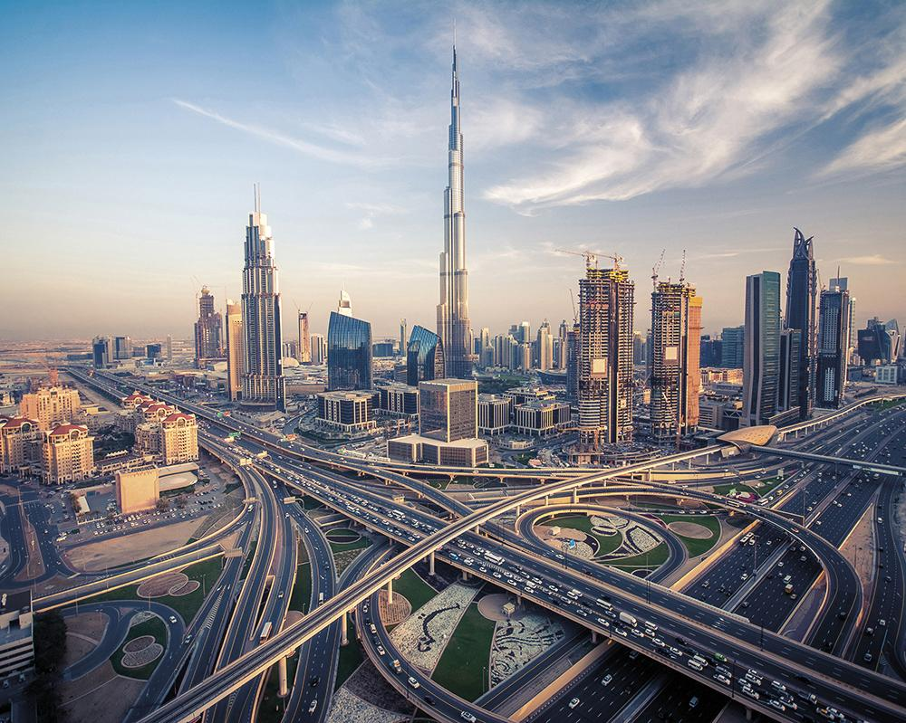
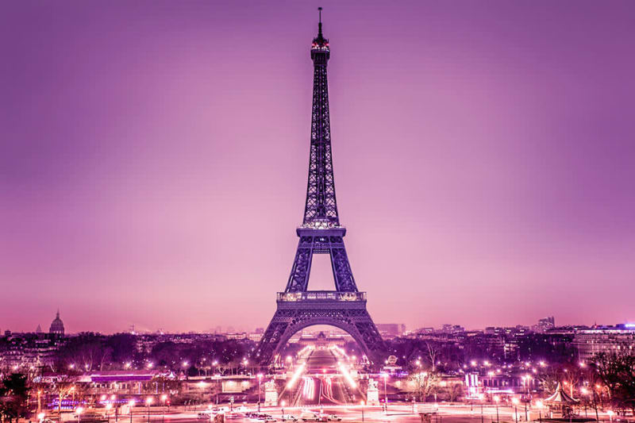
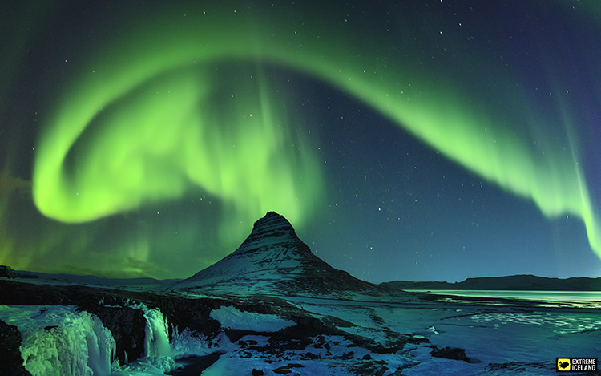
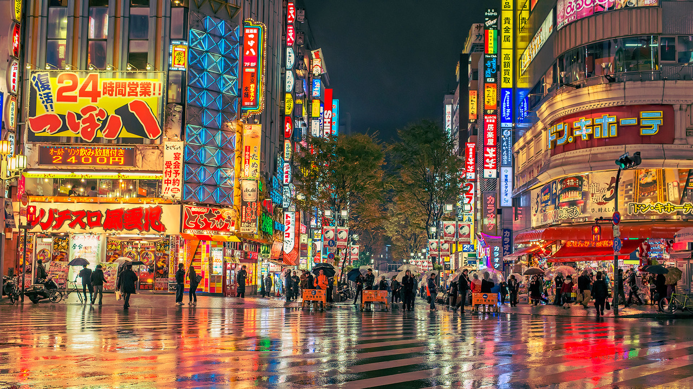

FAVORITE PLACES

Dubai is one of the most beautiful place i've ever been. I want to go back there soon

Paris is one of the place that I really want to go to. I want to see the impressive beauty of Eiffel Tower

Iceland is one of my bucketlist.The best spot here is what they called Auroa Burealis also known as Northern lights

I love to go to Japan. They say Japan is one of the beautiful and cleanest place in the world and they are much advanced in terms of technology. and I forgot to mention their toilet button is so amazing.